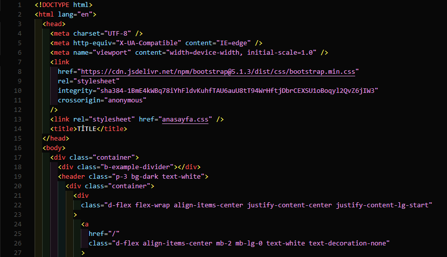
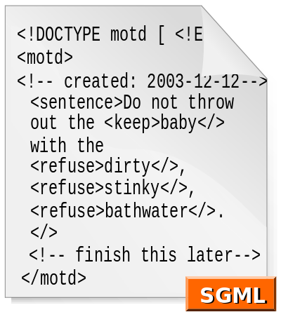

İşaretleme Dilleri

Bu terimi doğru bir şekilde tanımlamak için - bir işaretleme dili, metni açıklayan bir dildir, böylece bilgisayar bu metni işleyebilir. Çoğu biçimlendirme dili insan tarafından okunabilir çünkü ek açıklamalar, metni metinden ayırmak için yazılmıştır. Örneğin, HTML, XML ve XHTML ile, işaretleme etiketleri . Bu karakterlerden birinde görünen herhangi bir metin, biçimlendirilmiş metnin bir parçası değil, biçimlendirme dilinin bir parçası olarak kabul edilir.
HTML 5

Hiper Metin İşaretleme Dili (İngilizce Hypertext Markup Language, ks.
HTML) web sayfalarını oluşturmak için kullanılan standart metin
işaretleme dilidir. Dilin son sürümü HTML5'tir.
HTML, bir programlama dili olarak tanımlanamaz. Zira HTML kodlarıyla
kendi başına çalışan bir program yazılamaz. Ancak bu dili yorumlayabilen
programlar aracılığıyla çalışabilen programlar yazılabilir. Programlama
dili denilememesinin nedeni tam olarak budur. Temel gereği yazı,
görüntü, video gibi değişik verileri ve bunları içeren sayfaları
birbirine basitçe bağlamak, buna ek olarak söz konusu sayfaların web
tarayıcısı yazılımları tarafından düzgün olarak görüntülenmesi için
gerekli kuralları belirlemektir. HTML kodunu web tarayıcıları okur,
yorumlar ve görsel hale dönüştürürler, dolayısıyla aynı HTML kodunun
farklı tarayıcılarda farklı sonuç vermesi olasıdır. CSS ve JavaScript
ile beraber kullanıldığında HTML vasıtasıyla görsel ve dinamik web
siteleri yaratılabilir.
XML
XML (Extensible Markup Language ya da Türkçesiyle Genişletilebilir İşaretleme Dili), hem insanlar hem bilgi işlem sistemleri tarafından kolayca okunabilecek dokümanlar oluşturmaya yarayan bir işaretleme dilidir. W3C tarafından tanımlanmış bir standarttır. Bu özelliği ile veri saklamanın yanında farklı sistemler arasında veri alışverişi yapmaya yarayan bir ara format görevi de görür. SGML'in basitleştirilmiş bir alt kümesidir.
XHTML
XHTML, açılımıyla Extensible HyperText Markup Language Türkçesi Genişletilebilir Büyütülmüş Metin İşaretleme Dili istemci taraflı(client side) bir metin işaretleme dilidir. XHTML 26 Haziran 2000'den beri bir web standartıdır. Kodlama olarak oldukça büyük farklar yaratan bu dil için:'XML sözdiziminin HTML içinde kullanılması.' diyebiliriz. HTML dilinin farklı tarayıcılarda (bknz. Internet Explorer, Firefox, Opera) farklı yorumlanması ve sözdiziminde fazla düzensizlik ve hata olduğu için XHTML W3C(World Wide Web Consortium - WWW) tarafından önerilmiştir. XHTML'nin diğer bir özelliği de kodlama yapanları CSS teknolojisini kullanmaya özendirmesidir.
SGML

Standard Generalized Markup Language (SGML; ISO 8879:1986) doküman
işaretleme dillerinin tanımlanması için belirlenen standartlardır.
Bilişim dünyasında yaygın olarak kullanılan HTML ve XML işaretleme
dillleri SGML baz alınarak tanımlanmış olmakla beraber, SGML kurallarına
tamamen uymadıkları için bir SGML uygulaması sayılmazlar.
MARKDOWN

Markdown, düz-metin-biçimlendirme sözdizimine sahip hafif bir işaretleme
dili. Tasarımı, birçok çıktı biçimine dönüştürülmesine izin verir, ancak
aynı ada sahip orijinal araç yalnızca HTML'yi destekler. Markdown
genellikle BENİOKU (README) dosyalarını biçimlendirmek, çevrimiçi
tartışma forumlarına mesaj yazmak ve düz metin düzenleyicisi kullanarak
zengin metin oluşturmak için kullanılır.
Markdown’un ilk tanımı belirsizlikler ve cevaplanmamış sorular
içerdiğinden, yıllar boyunca ortaya çıkan uygulamaların ince
farklılıkları vardır ve çoğu sözdizimi, dosya uzantılarıyla birlikte
gelir.
LATEX
LaTeX, TEX dizgi programı için belge düzenleme biçimidir.
LaTeX, yazıcıdan çıktısı alındığında iyi görünen belge yaratmak için
kullanılan bir etiketleme dilidir. Genellikle bilimsel çalışmaların
yazımı sırasında kullanılır ve bilim dünyasında neredeyse
standarttır.
LaTeX ile bir tezi ya da bilimsel bir makaleyi, bir raporu ya da bir
kitabı yazmak avantajlıdır çünkü matematiksel eşitlikleri yazmak ve bu
eşitliklere metin içinde atıflarda bulunmak çok kolaydır. LaTeX ile
ayrıca, içindekiler listesi, şekil ve tablo listesi oluşturma, sayfa
numaralama, tabloların ve şekillerin numaralanması, kaynakçanın
düzenlenmesi, belgenin sayfa görüntüsü gibi işlemler otomatik olarak
halledilir. Her şeyden daha önemlisi, metin içinde yapılan atıflar
(ister eşitliklere, ister şekillere ya da tablolara isterse kaynaklara
olsun) yine ek bir çabaya gerek kalmadan halledilir. LaTeX bu açılardan
avantajlıdır.
Bunlara karşın, LaTeX ile bir belge yazmak, bu işe ilk defa kalkışan
birisi için oldukça zor olabilir. Kişi, karşılaşabileceği bir dolu garip
isimli ve anlaşılması zor kavramın içinden sıyrılıp da yazmaya başlamayı
başaramayabilir. Yine de belirtmek gerekir ki LaTeX son derece üstündür
ve bir kere alıştıktan sonra MS Word gibi kelime işlemcilerle yazmaya
karşı önemli avantajları vardır. Sonuçta elde edilen belgenin kalitesi
herhangi bir metin editörüyle yazılan eşdeğeri ile kıyas kabul etmeyecek
kadar iyidir.